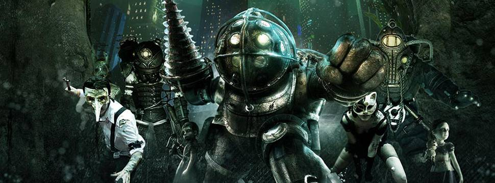
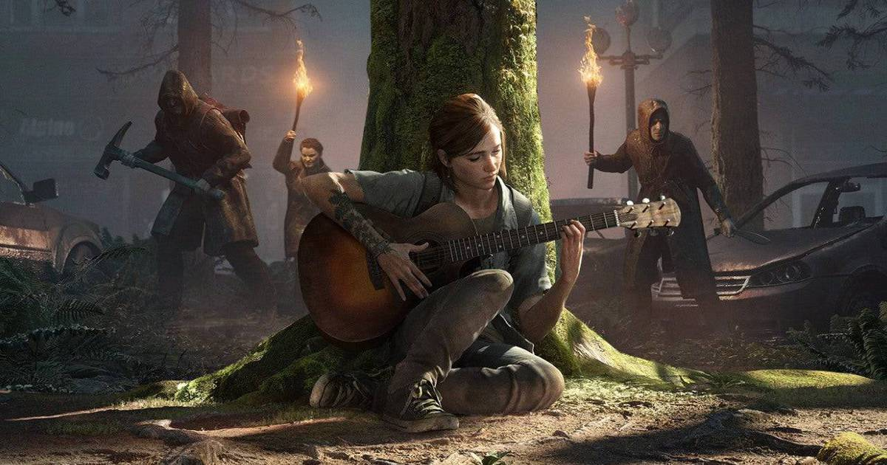

Uma listinha de histórias e narrativas maravilhosas que você está perdendo se a mídia video game não faz parte da sua vida.
Aproveitei para classifir os títulos com relação a habilidade com controle ou mouse/teclado que você precisa ter para jogar cada um deles. A escala vai de 1 a 3 de tal forma que:
🎮 — nenhuma habilidade
🎮🎮 — um pouco de habilidade
🎮🎮🎮 — muita habilidade
To the Moon
Uma ficção científica sobre os amargos desencontros da vida.
Habilidade necessária: 🎮
12 Minutes

Um mistério. Mais do que isso é spoiler.
Habilidade necessária: 🎮
What Remains of Edith Finch

Uma ode à narrativa.
Habilidade necessária: 🎮🎮
Life is Strange

Um mistério sobre escolhas e consequências.
Habilidade necessária: 🎮🎮
Bioshock

Filosofia política em uma distopia embaixo d’água.
Habilidade necessária: 🎮🎮🎮
The Last of Us

Uma obra-prima sobre amor, ódio e humanidade.
Habilidade necessária: 🎮🎮🎮